СП 334.1325800.2017 «Квартирные тепловые пункты в многоквартирных жилых домах. П»
О документе: разработчики, утверждение, регистрация, ключевые слова
- 1 ИСПОЛНИТЕЛИ - ООО «СанТехПроект», НП «АВОК»
- 2 ВНЕСЕН Техническим комитетом по стандартизации ТК 465 «Строительство»
- 3 ПОДГОТОВЛЕН к утверждению Департаментом градостроительной деятельности и архитектуры Министерства строительства и жилищно-коммунального хозяйства Российской Федерации (Минстрой России)
- 4 УТВЕРЖДЕН И ВВЕДЕН В ДЕЙСТВИЕ приказом Министерства строительства и жилищнокоммунального хозяйства Российской Федерации от 29 августа 2017 г. № 1180/пр и введен в действие с 2 марта 2018 г.
- 5 ЗАРЕГИСТРИРОВАН Федеральным агентством по техническому регулированию и метрологии (Росстандарт)
В случае пересмотра (замены) или отмены настоящего свода правил соответствующее уведомление будет опубликовано в установленном порядке. Соответствующая информация, уведомление и тексты размещаются также в информационной системе общего пользования - на официальном сайте разработчика (Минстрой России) в сети Интернет
© Минстрой России, 2017
Настоящий нормативный документ не может быть полностью или частично воспроизведен, тиражирован и распространен в качестве официального издания на территории Российской Федерации без разрешения Минстроя России
- 1 Область применения
............................................................................................................................................
- 2 Нормативные ссылки
............................................................................................................................................
- 3 Термины и определения
............................................................................................................................................
- 4 Обозначения и сокращения
............................................................................................................................................
- 5 Общие положения
............................................................................................................................................
- 6 Основные требования к проектированию квартирных тепловых пунктов в многоквартирных жилых домах
............................................................................................................................................
- 6.1 Требования к оборудованию и размещению квартирных тепловых пунктов
- 6.2 Требования к электроснабжению
............................................................................................................................................
- 6.3 Требования к автоматизации и диспетчеризации
............................................................................................................................................
- 6.4 Требования к проектированию систем водоснабжения и канализации
............................................................................................................................................
7 Классификация схем технических решений квартирных тепловых пунктов
............................................................................................................................................
8 Ввод в эксплуатацию, приемка и сервисное обслуживание квартирных тепловых пунктов
............................................................................................................................................
Библиография
............................................................................................................................................
Дата введения - 2018-03-02
УДК 332.8:697.3
ОКС 91.140.65
Ключевые слова: квартирные тепловые пункты, КТП, приборы отопительные, система отопления, система децентрализованного ГВС, станции ГВС, многоквартирный жилой дом
Руководитель организации-разработчика ООО «СанТехПроект» Технический директор
\_\_\_\_\_\_\_\_\_\_\_\_\_\_\_\_\_\_\_\_
Шарипов А.Я.
СОИСПОЛНИТЕЛИ
Вице-президент НП «АВОК», Профессор ФГБОУ ВПО «Московский архитектурный институт (государственная академия)», канд. техн. наук
\_\_\_\_\_\_\_\_\_\_\_\_\_\_\_\_\_\_\_\_
Бродач М.М.
Д-р техн. наук, профессор, член-корреспондент РААСН, Президент НП «АВОК», Заведующий кафедрой ФГБОУ ВПО «Московский архитектурный институт (государственная академия)»
\_\_\_\_\_\_\_\_\_\_\_\_\_\_\_\_\_\_\_\_
Табунщиков Ю.А.
Руководитель отдела научно-исследовательских работ и новой техники НП «АВОК», Профессор ФГБОУ ВПО «Московский архитектурный институт (государственная академия)», канд.техн.наук.
\_\_\_\_\_\_\_\_\_\_\_\_\_\_\_\_\_\_\_\_
Шилкин Н.В.
Введение
6 ВВЕДЕН ВПЕРВЫЕ
Настоящий свод правил разработан в соответствии с федеральными законами «Технический регламент о безопасности зданий и сооружений» [1] и «Об энергосбережении и о повышении энергетической эффективности и о внесении изменений в отдельные законодательные акты Российской Федерации» [2]. Учтены также требования Федерального закона «Технический регламент о требованиях пожарной безопасности» [3] и сводов правил системы противопожарной защиты, положения действующих строительных норм и сводов правил, отечественный опыт исследований и проектной практики.
Настоящий свод правил устанавливает требования к проектированию квартирных тепловых пунктов в многоквартирных жилых домах с учетом СП 124.13330, [4], СП 60.13330, СП 30.13330, СП 54.13330.
Свод правил выполнен авторским коллективом: НП «АВОК» (д-р техн. наук, проф. Ю.А. Табунщиков , канд. техн. наук В.И. Ливчак , канд. техн. наук М.М. Бродач , канд. техн. наук Н.В. Шилкин ); ООО «СанТехПроект» (канд. техн. наук А.Я. Шарипов ).
1Область применения
2Нормативные ссылки
В настоящем своде правил использованы нормативные ссылки на следующие документы:
ГОСТ 30494-2011 Здания жилые и общественные. Параметры микроклимата в помещениях
СП 30.13330.2016 «СНиП 2.04.01-85* Внутренний водопровод и канализация зданий»
СП 54.13330.2016 «СНиП 31-01-2003 Здания жилые многоквартирные»
СП 60.13330.2016 «СНиП 41-01-2003 Отопление, вентиляция и кондиционирование воздуха»
СП 89.13330.2016 «СНиП II-35-76 Котельные установки»
СП 124.13330.2012 «СНиП 41-02-2003 Тепловые сети»
Примечание - При пользовании настоящим сводом правил целесообразно проверить действие ссылочных документов в информационной системе общего пользования - на официальном сайте федерального органа исполнительной власти в сфере стандартизации в сети Интернет или по ежегодному информационному указателю «Национальные стандарты», который опубликован по состоянию на 1 января текущего года, и по выпускам ежемесячного информационного указателя «Национальные стандарты» за текущий год. Если заменен ссылочный документ, на который дана недатированная ссылка, то рекомендуется использовать действующую версию этого документа с учетом всех внесенных в данную версию изменений. Если заменен ссылочный документ, на который дана датированная ссылка, то рекомендуется использовать версию этого документа с указанным выше годом утверждения (принятия). Если после утверждения настоящего свода правил в ссылочный документ, на который дана датированная ссылка, внесено изменение, затрагивающее положение, на которое дана ссылка, то это положение рекомендуется применять без учета данного изменения. Если ссылочный документ отменен без замены, то положение, в котором дана ссылка на него, рекомендуется применять в части, не затрагивающей эту ссылку. Сведения о действии сводов правил целесообразно проверить в Федеральном информационном фонде стандартов.
\_\_\_\_\_\_\_\_\_\_\_\_\_\_\_\_\_\_\_\_\_\_\_\_\_\_\_\_\_\_\_\_\_\_\_\_\_\_\_\_\_\_\_\_\_\_\_\_\_\_\_\_\_\_\_\_\_\_\_\_\_\_\_\_\_\_\_\_\_\_\_\_\_\_\_
В МНОГОКВАРТИРНЫХ ЖИЛЫХ ДОМАХ. Правила проектирования
Apartment heating units in multicompartment buildings. Regulations of design
3Термины и определения
В настоящем своде правил применены следующие термины с соответствующими определениями:
- 3.1индивидуальный тепловой пункт; ИТП
- Тепловой пункт, предназначенный для присоединения систем отопления, вентиляции, горячего водоснабжения и технологических теплоиспользующих установок одного здания или его части.Источник: СП 124.13330.2012, пункт 3.13
- 3.2источник тепловой энергии
- Комплекс устройств, установок, зданий, сооружений для производства тепловой энергии.
- 3.3квартирный тепловой пункт; КТП
- Пункт (устройство, узел) подключения отдельной квартиры к внутридомовым или локальным распределительным сетям отопления и холодного водоснабжения для ГВС, служащий для местного распределения и учета поступающей к потребителю тепловой энергии (энергоресурсов) и управления системами отопления и приготовления горячей воды для отдельной квартиры.
- 3.4котельная
- Здание (в том числе блок-модульного типа) или комплекс зданий и сооружений с котельными установками и вспомогательным технологическим оборудованием, предназначенными для выработки тепловой энергии.Источник: СП 89.13330.2016, пункт 3.1
- 3.5котельная автономная (индивидуальная)
- Котельная, предназначенная для теплоснабжения одного здания или сооружения.
- 3.6котельная центральная
- Котельная, предназначенная для нескольких зданий и сооружений, связанных с котельной наружными тепловыми сетями.
- 3.7отопление
- Искусственное нагревание помещения в холодный период года для компенсации тепловых потерь ограждающими конструкциями и поддержания в помещении нормируемой температуры воздуха.Источник: СП 60.13330.2016, пункт 3.23
- 3.8прибор отопительный
- Устройство для обогрева помещения путем передачи теплоты от теплоносителя, поступающего от источника теплоты в окружающую среду.
- 3.9прибор учета
- Техническое средство, предназначенное для измерений расхода/объема/количества используемого ресурса, имеющее нормированные метрологические характеристики, воспроизводящее и/или хранящее единицу физической величины, размер которой принимается неизменным (в пределах установленной погрешности) в течение определенного интервала времени, и разрешенное к использованию для коммерческого учета.
- 3.10регулирование качественное
- Регулирование отпуска тепловой энергии путем изменения температуры теплоносителя.
- 3.11регулирование количественное
- Регулирование отпуска тепловой энергии путем изменения расхода теплоносителя.
- 3.12тепловой пункт
- Комплекс оборудования, устройств, установок, приборов, расположенных в здании или помещении, предназначенный для преобразования, распределения и регулирования тепла, управления гидравлическими и тепловыми режимами, контроля за параметрами теплоносителя, учета расхода тепла и теплоносителя.
- 3.13центральный тепловой пункт; ЦТП
- Тепловой пункт, предназначенный для присоединения систем отопления, вентиляции, горячего водоснабжения и технологических теплоиспользующих установок двух зданий или более. [СП 124.13330.2012, пункт 3.14]
4Обозначения и сокращения
В настоящем своде правил применены следующие обозначения и сокращения:
ВО - вспомогательное оборудование;
ВПУ - водоподготовительная установка;
В1 - хозяйственно-питьевой водопровод ХВС;
ГВС - горячее водоснабжение;
ДВ - дутьевой вентилятор;
НВИЭ - нетрадиционная возобновляемая энергия;
ОК - отопительный контур;
ПС - контур полотенцесушителя;
СТС - система теплоснабжения;
ТОУ - технологическое оборудование и установки;
Т1, Т2 - подающая и обратная магистрали тепловой сети;
T11, Т22 - подающая и обратная магистрали СТС;
T12, Т21 - подающая и обратная магистрали ОК;
- T13, Т23 - подающая и обратная магистрали ОК;
Т3 - хозяйственно-питьевой водопровод ГВС;
T4 - рециркуляция ГВС;
УУТЭ - узел учета тепловой энергии;
ХВС - холодное водоснабжение;
ЦСТ - централизованная система теплоснабжения.
5Общие положения
Схема комплексной автоматизированной системы управления теплоснабжением жилого района при количественно-качественном регулировании приведена на рисунке 5.1.
Рисунок 5.1 - Комплексная автоматизированная система управления теплоснабжения жилого района при количественно-качественном регулировании
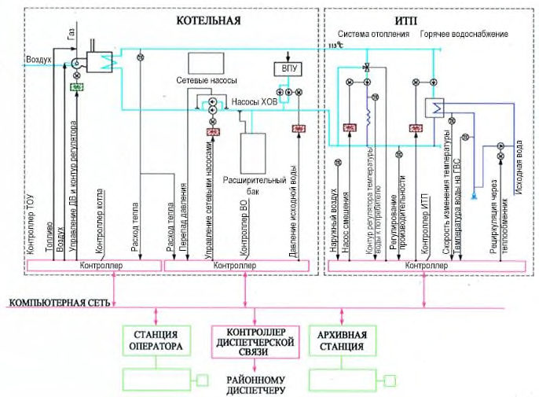
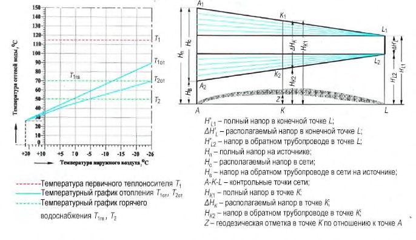
а) Температурный график б) Пьезометрический график
Рисунок 5.2 - Тепловой и гидравлический режимы количественного регулирования отпуска тепловой энергии
Ф
- 6 Основные требования к проектированию квартирных тепловых пунктов в многоквартирных жилых домах
6.1 Требования к оборудованию и размещению квартирных тепловых пунктов
- 6.1.1 КТП представляет собой модульное устройство заводской готовности, рассчитанное для настенного или встроенного монтажа (в том числе непосредственно на теплоснабжающем стояке), преобразующее параметры теплоносителя и перераспределяющее (в зависимости от принятой схемы КТП) потоки теплоносителя в контур отопления или/и горячего водоснабжения квартиры и управляющее тепловыми нагрузками этих контуров.
6.1.2 КТП обеспечивает возможность отопления квартиры в период межсезонных колебаний климатических показателей наружного воздуха, позволяет проводить полный учет фактически затраченных энергоресурсов на теплои водоснабжение. 6.1.3 КТП состоит из проточного водонагревателя системы горячего водоснабжения квартиры и узла подключения системы отопления по зависимой схеме без изменения параметров либо по независимой схеме с проточным водонагревателем системы отопления. В состав КТП может входить УУТЭ. Устройство КТП может предусматривать гидравлическую связь контура ГВС и отопления, обеспечивающую: -приоритетный режим работы контура горячего водоснабжения с автоматическим отключением гидравлическим приводом подачи теплоносителя в систему отопления в случае возникновения в квартире потребности в горячей воде и соответствующим включением подачи теплоносителя в контур водонагревателя; -параллельное снабжение теплоносителем водонагревателя горячего водоснабжения и системы отопления с условно приоритетным режимом работы контура горячего водоснабжения КТП. Подача теплоносителя в контур водонагревателя проводится при срабатывании гидравлического привода при начале водозабора. Приоритетный режим работы контура ГВС не является обязательным, поскольку водонагреватель ГВС в КТП рассчитывается на режим пикового водоразбора. При проектировании КТП с приоритетным режимом работы контура ГВС необходимо учитывать возможное увеличение гидравлического сопротивления водонагревателя ГВС и, как следствие, всего КТП, что может приводить к нарушению теплового баланса здания. КТП допускается подключать как к сетям ЦСТ с установкой промежуточного домового теплового пункта (упрощенной компоновки), так и непосредственно к локальным сетям теплоснабжения от центральной или индивидуальной (автономной) котельной (упрощенной компоновки), с рабочими параметрами, не превышающими максимально допустимые для КТП, а также к источникам НВИЭ с низкотемпературным теплоносителем. 6.1.4 Теплоноситель по домовой двухтрубной системе теплоснабжения подается в квартиру. В схеме теплоснабжения с КТП производство горячей воды осуществляется локально в квартире потребителя, что обеспечивает отсутствие централизованной системы ГВС и линии циркуляции горячей воды по зданию. Гидравлическая схема КТП с пропорциональным или термостатическим
6.1.5 регулированием приведена на рисунке 6.1.
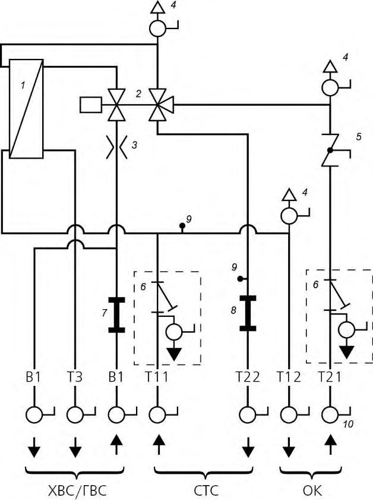
1 - пластинчатый теплообменник ГВС; 2 - трехходовой гидравлический регуляторраспределитель расхода пропорционального или термостатического действия; 3 -дроссельная шайба ГВС (необходима в случае применения регулятора-распределителя расхода пропорционального действия); 4 - воздухоотводчик (кран Маевского); 5 -зональный клапан; 6 - грязеуловитель с шаровым краном для промывки, наполнения и слива (опция); 7 - разъем для счетчика холодной воды; 8 - разъем для счетчика тепловой энергии; 9 - муфта для погружной гильзы теплосчетчика; 10 - запорный шаровой кран
Рисунок 6.1 - Гидравлическая схема КТП базовой комплектации
- 6.1.6 КТП настенного монтажа полной заводской готовности следует размещать в нишах, шахтах стояков как внутри, так и вне жилых помещений, непосредственно на стене санузла с применением декоративного накладного кожуха.
- 6.1.7 Распределение теплоносителя по зданию осуществляется по двухтрубной схеме (двухпроводные распределительные стояки). Места прокладывания стояков и соответственно реализуемую схему распределения теплоносителя определяют проектом.
- 6.1.8 В зависимости от конфигурации здания и принятого проектного решения КТП допускается располагать в сантехнических зонах, в лестнично-лифтовом холле. Для обеспечения постоянной готовности каждого КТП к подаче горячей воды потребителю (особенно в летнем режиме эксплуатации) в последних по подключению к стояку КТП необходимо организовать циркуляцию теплоносителя, применяя КТП, укомплектованный термическим мостом циркуляции (см. 7.6), или устанавливать выносной термический мост циркуляции в крайней точке стояка. Также требуется устанавливать термический мост циркуляции при удалении КТП от магистрального трубопровода более 3 м.
- 6.1.9 Наиболее предпочтительно устанавливать КТП в основной сантехнической зоне (основные потребители горячей воды) квартиры или в непосредственной близости от нее (см. 7.7).
- 6.1.10 Схема 1. Распределительный вертикальный стояк на группу однотипных квартир, КТП в квартире или лестнично-лифтовом холле
Распределительные стояки объединяют в техническом подполье разводящими магистралями. В основании каждого стояка устанавливают балансировочную арматуру (статические и/или автоматические клапаны). Следует обращать внимание на диапазон регулирования балансировочной арматуры при выборе производителя. Распределительные стояки обычно прокладывают в сантехнической зоне. КТП монтируют непосредственно на стояке или вблизи его, с размещением в квартире или лестнично-лифтовом холле в зависимости от принятого архитектурно-планировочного решения. Учитывают требования 7.6 и 7.7.
6.1.11 Схема 2. Центральный распределительный стояк на группу квартир этажа, этажный распределитель, КТП в квартире или лестнично-лифтовом холле
На каждом этаже организуют распределительную гребенку с установкой на ней балансировочной арматуры (статические и/или автоматические клапаны). Следует обращать внимание на диапазон регулирования при выборе производителя балансировочной арматуры. Теплоноситель распределяют по этажу посредством трубопроводов, соединяющих распределительную гребенку и КТП, который размещают в квартире или лестнично-лифтовом холле. Необходимо комплектовать КТП термическим мостом циркуляции (см. 7.6).
- 6.1.12 Для обеспечения одинаковых параметров расчетного напора на вводе каждого потребителя (ответвления к КТП) в зависимости от протяженности стояка устанавливается балансировочная арматура в местах, доступных для обслуживания и регулировки.
- 6.1.13 Место установки КТП следует выбирать с учетом многих критериев и не все из них можно обеспечить одновременно. Например, место разбора горячей воды может располагаться достаточно далеко от места установки КТП. При емкости линии квартирной системы ГВС, соединяющей основного потребителя горячей воды и КТП, более 3 дм³ (17 м трубы с условным проходом Ду 15 мм) в КТП рекомендуется устанавливать линию циркуляции ГВС с насосом (см. 7.7) для обеспечения комфортных параметров потребления горячей воды.
- 6.1.14 Следует обращать внимание на удаленность расположения самих КТП от теплоснабжающего стояка, что особенно актуально для летнего периода эксплуатации системы при отсутствии отопительной нагрузки. Удаленность КТП более 3 м от теплоснабжающего стояка также приводит к остыванию теплоносителя и повышению времени готовности КТП к обеспечению потребителя горячей водой. В таких КТП требуется установка термического моста циркуляции (см. 7.6).
- 6.1.15 При одновременной удаленности КТП от теплоснабжающего стояка и удаленности приборов разбора горячей воды от места расположения КТП следует применять совокупность мер по обеспечению требуемого уровня комфорта.
- 6.1.16 При выборе места установки КТП необходимо учитывать следующее:
- удаленность расположения КТП от теплоснабжающего стояка и до основного потребителя горячей воды;
- доступность для монтажа, ухода, устранения отказов и визуального считывания показаний (возможны размещение на лестничной клетке, диспетчеризация);
- исключение загрязнения (при размещении в ванной комнате или в непосредственной близости от места приготовления пищи);
- простота монтажа: монтаж в шахте, использование имеющегося дымохода (реконструкция), монтаж в старый распределительный канал (реконструкция) и пр.
- 6.1.17 КТП должен обеспечить в помещениях в течение отопительного периода температуру воздуха в пределах оптимальных параметров, установленных ГОСТ 30494, при расчетных параметрах наружного воздуха для соответствующих районов строительства и приготовление требуемого объема горячей воды заданной температуры согласно СП 30.13330.
- 6.1.18 При подключении КТП к сетям централизованного теплоснабжения или непосредственно к локальным сетям теплоснабжения от центральной или индивидуальной (автономной) котельной рабочие параметры среды не должны превышать максимально допустимые для КТП.
- 6.1.19 Схемные решения КТП в зависимости от применяемого источника теплоснабжения приведены на рисунках 6.2, 6.3.
- 6.1.20 При присоединении системы внутреннего теплоснабжения многоквартирного жилого дома с применением схемы с КТП к автономному источнику (рисунок 6.2) следует использовать количественную регулировку отпуска тепла, а регулирование температуры теплоносителя во внутреннем контуре по методу количественно-качественного регулирования точки излома выбирают из условия нагрева горячей воды до температуры, принятой в квартирных теплообменниках.
- 6.1.21 Систему внутреннего теплоснабжения многоквартирного жилого дома с применением схемы с КТП следует присоединять к системе городского ЦСТ через теплообменники, устанавливаемые в домовом тепловом пункте (рисунок 6.3). При этом циркуляция теплоносителя в разводящих по дому трубопроводах осуществляется сетевым насосом, а регулирование температуры теплоносителя в зависимости от температуры наружного воздуха по графику с изломом при температуре 70 °С регулирующим клапаном. На вводе в тепловой пункт размещают домовой теплосчетчик вне зависимости от установки теплосчетчика в КТП.
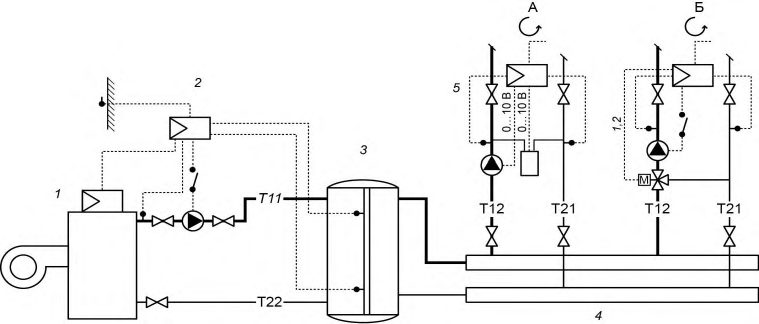
1 - котельная установка; 2 - контроллер управления источника 1 ; 3 - буферная емкость теплоносителя; 4 - распределительный коллектор; 5 - контур теплоснабжения: А - жилых помещений, Б - мест общего пользования
Рисунок 6.2 - Компоновка теплового пункта при применении схемы теплоснабжения с КТП. Источник теплоснабжения - индивидуальная котельная
1 - сетевой теплообменник; 2 - контроллер управления источника 1 ; 3 - буферная емкость теплоносителя; 4 - распределительный коллектор; 5 - контур теплоснабжения: А - жилых помещений, Б - мест общего пользования
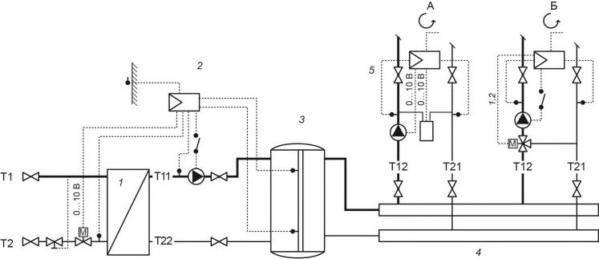
Рисунок 6.3 - Компоновка теплового пункта при применении схемы теплоснабжения с КТП. Источник теплоснабжения - тепловая сеть
6.2 Требования к электроснабжению
- 6.2.1 Как правило, КТП функционирует за счет собственного давления воды (перепада давлений в сети теплоснабжения и напора в системе ХВС) систем тепло- и водоснабжения здания, подвод электроэнергии необходим только в случае применения функционально расширенных схем КТП и не влияет на его работоспособность в случае отключения электроэнергии.
- 6.2.2 Требования к подводу электропитания, размещению электротехнической арматуры, выбору сечения подводящих кабелей определяют исходя из рекомендаций производителя оборудования.
6.3 Требования к автоматизации и диспетчеризации
- 6.3.1 Регулирование параметров ГВС и системы отопления возможно с помощью термостатического или электронного управления (электронный контроллер совместно с клапаном и электроприводом).
- 6.3.2 Управление температурным режимом в квартире осуществляется посредством радиаторных термостатов или центральным термостатом квартиры
(термостатами зон), подающим сигнал на центральный клапан (клапаны зоны), расположенный в КТП и включающий/отключающий подачу теплоносителя в контур отопления, что позволяет осуществлять управление местными пропусками и обеспечивать потребителю комфортные условия.
6.3.3 Особенности организации учета тепловой энергии
Из-за резко переменного режима работы КТП прибор учета тепловой энергии должен быстро реагировать на изменения расхода и температуры теплоносителя для обеспечения точности показаний. В связи с этим рекомендуется применять приборы учета с высокой частотой обновления импульсов (до одного импульса в минуту) и малоинерционные датчики температуры.
6.4 Требования к проектированию систем водоснабжения
6.4.1 Обеспечение нормативной температуры горячей воды
Диапазон допустимых температур в системе ГВС регламентируется СП 30.13330. Нижний предел температуры горячей воды обеспечивается КТП при соответствии параметров СТС, полученных расчетным путем, и трехходовым гидравлическим регулятором-распределителем расхода пропорционального действия (см. 7.5), а также следующим методом:
- качественно-количественного регулирования тепловой нагрузки - для индивидуальной групповой котельной;
- качественного регулирования тепловой нагрузки - для тепловой сети.
При соотношении гидравлических сопротивлений ОК и ГВС КТП Δ Р ОК/Δ Р ГВС > 1 в контур ГВС подается расход теплоносителя, превышающий требуемый. В этом случае горячая вода будет перегреваться, и поэтому требуется комплектовать КТП термостатическим смесителем ГВС (см. рисунок 7.7), обеспечивающим защиту от получения ожога. Также термостатический смеситель ГВС допускается устанавливать для обеспечения безопасности потребителя в случае возникновения нерасчетных параметров в СТС (на усмотрение проектировщика) или комплектовать на стадии эксплуатации при необходимости.
При применении термостатического регулирования расхода в системе ГВС обеспечение нормативной температуры горячей воды осуществляется посредством термостатического регулятора расхода, изменяющего расход греющего теплоносителя в зависимости от температуры воды в контуре ГВС. В этом случае комплектация КТП термостатическим смесителем ГВС не требуется.
6.4.2 Вода для хозяйственно-бытовых нужд и теплоноситель должны удовлетворять нормам проектирования систем тепло- и водоснабжения.
6.4.3 Для КТП характерен режим ГВС со сниженной интенсивностью образования отложений в силу переменного режима работы самого водонагревателя. Ввиду применения меднопаяных пластинчатых водонагревателей для исключения коррозии в местах соединения пластин требуется обеспечить меры по ограничению содержания железа в теплоносителе и питьевой воде в пределах нормативного уровня.
6.4.4 В ИТП (котельной) централизованно должно быть обеспечено автоматическое поддержание давления в системе ХВС в заданных пределах. В зависимости от применяемого материала трубопроводов рекомендуется доукомплектовывать КТП фильтрами грубой очистки в линии подключения ХВС.
6.4.5 Для регулирования статического напора в системе ХВС необходима установка регуляторов давлений. В схеме КТП на вводе линии ХВС в водонагреватель
ГВС устанавливают дроссельную шайбу для обеспечения заданного проектом расхода горячей воды.
- 6.4.6 Статический напор в системе ХВС у потребителя рассчитывают согласно СП 30.13330. При этом необходимо учитывать сопротивление узлов КТП в режиме ГВС и ХВС.
- 6.4.7 Стояк ХВС рассчитывается на суммарный расход воды для обеспечения ХВС потребителей и воды, поступающей на нагрев в КТП, с учетом одновременности потребления. При схеме с КТП обеспечивается постоянство напора в линиях холодной и горячей воды у потребителя.
7Классификация схем технических решений квартирных тепловых пунктов
7.1КТП в режиме отопления (рисунок 6.1). Управление ОК квартиры
Греющий теплоноситель Т11 от домового теплового пункта поступает в КТП, проходит через грязеуловитель 6 и поступает в систему отопления Т12 (по зависимой или независимой схеме). Пройдя ОК квартиры, теплоноситель Т21 также проходит грязеуловитель и через зональный клапан 5 , регулирующий подачу теплоносителя на отопление, проходит прибор учета тепловой энергии (если установлен) 8 и возвращается в обратный трубопровод Т22 системы теплоснабжения здания.
7.2Радиаторное отопление
В отопительный контур квартиры подается расход теплоносителя для покрытия тепловых потерь не более требуемого по расчету. Для ограничения расхода теплоносителя, поступающего в контур отопления, на стадии наладки устанавливают преднастройку на зональном клапане 5 (рисунок 6.1). Настройку определяют расчетным путем и учитывают дополнительное сопротивление отопительного контура по отношению к контуру ГВС рассматриваемой квартиры для их гидравлического согласования и исключения возникновения шумов в системе отопления. Регулирование температуры в комнатах допускается осуществлять термостатическими регуляторами, установленными на радиаторах отопления или посредством центрального электронного термостата, установленного в контрольном помещении. Во втором случае сигнал от центрального термостата подается на исполнительный двухпозиционный термоэлектрический привод, устанавливаемый на зональном клапане 5 КТП. При этом осуществляется отопление методом местных пропусков. Применение центрального термостата позволяет вводить индивидуальную программу отопления. Также систему отопления квартиры возможно разделить на контуры с установкой термостатов в каждом помещении квартиры (лучевая разводка системы отопления). От термостата подается сигнал на клапан своей зоны (КТП комплектуют распределителем). Для организации системы отопления квартиры применимы как кольцевая, так и лучевая схемы разводки. При установке термостатов на отопительные приборы предпочтение следует отдавать лучевой схеме разводки, что обеспечивает более эффективную работу термостатов и, как следствие, больший эффект энергосбережения при регулировании.
7.3Отопление помещений системой теплых полов
Возможно осуществление отопления квартиры системой теплых полов (пониженный температурный график). Для этого в КТП модульно устанавливают смесительный узел с насосом (рисунок 7.1). Возможны различные варианты управления трехходовым смесителем: термостатическое, электронное трехпозиционное по температуре в помещении или погодозависимое. Подключение контура теплых полов к системе осуществляется по зависимой схеме через встроенную в узел перепускную линию 11 .
7.4Комбинированное отопление
Возможна схема КТП, обеспечивающая сочетание радиаторного отопления и отопления системой теплых полов (рисунок 7.2).
7.5КТП в режиме ГВС
Включением/отключением режима ГВС в КТП управляет гидравлический регулятор-распределитель расхода пропорционального или термостатического действия. Регулятор-распределитель расхода может иметь два варианта исполнения двухходовой или трехходовой с функцией приоритета ГВС. В режиме ГВС после водонагревателя КТП обеспечивается низкая температура обратной магистрали Т21 в силу проточного (противоточная схема движения теплоносителя) режима нагрева питьевой воды.
7.6Режим ГВС в летний период
В схеме теплоснабжения с КТП необходимо обеспечить циркуляцию греющего теплоносителя Т11 в летний период эксплуатации (отсутствие отопительной нагрузки) для обеспечения нагрева горячей воды Т3 в водонагревателе КТП. Для этого в зависимости от принятой схемы разводящих сетей здания (см. 6.1) необходимо выполнить следующее. При схеме 1 (см. 6.1.11): в каждом КТП, удаленном более чем на 3 м от распределительной магистрали теплоносителя, устанавливают термический мост циркуляции (регулятор температуры «после себя»), который имеет настроечную шкалу 45 °С-65 °С (рисунок 7.3, позиция 11 ). При схеме 2 (см. 6.1.12): термический мост циркуляции устанавливают в крайних по ходу движения теплоносителя КТП, подключенных к рассматриваемому стояку, или устанавливают выносной термический мост циркуляции в крайней по ходу движения теплоносителя точке стояка (например, на техническом этаже) (рисунок 7.4). При таком решении обеспечивается стабильная температура греющего теплоносителя Т11 перед водонагревателем, достаточная для нагрева расчетного количества питьевой воды до нормативного уровня при отсутствии отопительной нагрузки. Роль термического моста циркуляции может выполнять вентиль, установленный на радиаторе ванной комнаты (полотенцесушителе) (см. 7.8). Применение в системе теплоснабжения термического моста циркуляции позволяет снизить потери тепловой энергии за счет отсутствия централизованной системы ГВС и периодической циркуляции теплоносителя Т11 для нагрева питьевой воды в летний период.
7.7Организация контура ГВС при значительной удаленности приборов разбора горячей воды от места установки КТП
Основным критерием для определения максимальной удаленности прибора разбора горячей воды от КТП является внутренний объем соединяющего их трубопровода, который не должен превышать 3 дм³ (3 л). В противном случае время ожидания схода остывшей воды с участка трубопровода оказывается за рамками комфортных для потребителя условий. Для обеспечения комфортного ГВС в квартирах с удаленными точками разбора горячей воды в КТП возможно модульно установить узел циркуляции горячей воды с таймером (рисунок 7.5) или термостатическим реле (рисунок 7.6). Также для обеспечения комфортных условий по приготовлению горячей воды в летний период эксплуатации системы необходимо учитывать удаленность расположения КТП от распределительной сети здания и, при необходимости, комплектовать КТП термическим мостом циркуляции (см. 7.6).
При опасности перегрева воды для обеспечения защиты от получения ожога необходимо комплектовать КТП термостатическим смесителем ГВС (см. 6.4.1 и рисунок 7.7).
7.8Организация контура радиатора (полотенцесушителя) и контура теплого пола в ванной комнате
При стандартной схеме теплоснабжения в контуре полотенцесушителя циркулирует вода из системы ГВС. В случае применения схемы с КТП в контуре полотенцесушителя циркулирует теплоноситель. При этом контур полотенцесушителя выполняют в виде ответвления от основного контура отопления квартиры. Это осуществляют в самом модуле КТП (рисунок 7.8) или путем местной установки вентиля на обратной линии контура полотенцесушителя при условии отсутствия центрального регулирования зонального клапана или комплектации КТП распределителем с установкой зонального клапана на каждом ответвлении (рисунок 7.9, позиция 5 ). При применении регулятора температуры «после себя» он также выполняет роль термического моста циркуляции (см. 7.6). При необходимости установки в КТП контура циркуляции ГВС (см. 7.7) возможно подключать контур полотенцесушителя на линию циркуляции.
7.9Схема КТП с ограничителем температуры обратной магистрали контура отопления (рисунок 7.10)
В режиме отопления расчетная температура обратной магистрали Т22 обеспечивается при соблюдении проектных требований, а также в ИТП с помощью контроллера управления. Помимо этого, при необходимости, в КТП возможно модульно установить ограничитель температуры обратной магистрали, который функционирует аналогично термическому мосту циркуляции (см. 7.7), обеспечивая регулирование «местными пропусками» при превышении температуры обратного потока, заданного на самом элементе.
7.10Гидравлическая балансировка КТП в системе
Для гидравлической увязки КТП в системе требуется установка балансировочной арматуры. В зависимости от принимаемой схемы и проектного решения балансировочные клапаны (статические и/или автоматические) устанавливают на стояках, этажных ответвлениях и/или ответвлениях к КТП (см. также 6.1.7-6.1.13). При этом функция клапана заключается в поддержании расчетного перепада давления (автоматический клапан) при изменении расхода теплоносителя по причине включения/отключения нагрузки ГВС в рассматриваемом ответвлении (стояке) или поддержании заданного напора (статический клапан) для рассматриваемого ответвления (стояка), что требуется для ограничения расхода и напора теплоносителя в расчетном режиме. Следует выбирать клапан с диапазоном регулирования, обеспечивающим требуемый перепад давления в расчетном режиме совокупной нагрузки отопления и ГВС всех подключенных к ответвлению (стояку) потребителей. Также возможно укомплектовать КТП балансировочной арматурой модульно (рисунок 7.11). В основном это применимо при удалении КТП от других потребителей или в проектах отдельно стоящих индивидуальных домов.
7.11Особенности функционирования КТП с условной гидравлической связью режима работы водонагревателя ГВС и системы отопления
Данная схема КТП характеризуется большей суммарной тепловой мощностью подключения, т. к. не обеспечивается 100 % отключение контура отопления рассматриваемой квартиры в момент потребления горячей воды (в отличие от схем, рассмотренных в 7.1). Расход теплоносителя в контур отопления может ограничиваться только соотношением сопротивлений по отношению к контуру ГВС. КТП с условной гидравлической связью режима работы водонагревателя ГВС и системы отопления позволяет обеспечить бόльшую по сравнению с КТП со схемой приоритетного ГВС отопительную нагрузку. В основном это достигается за счет увеличения проходного сечения трубопроводов подключения КТП к СТС и ОК квартиры Т11, Т12, Т21 и Т22, а также за счет изменения схемы движения теплоносителя, что по сравнению со схемой, рассмотренной в 6.1.6, позволяет обеспечить более низкие параметры гидравлического сопротивления ОК (при больших расходах теплоносителя) и тем самым увеличить пропускную отопительную способность КТП.
7.12Применение КТП с условной гидравлической связью режима работы водонагревателя ГВС и системы отопления
КТП увеличенной отопительной мощности (рисунок 7.12) применяют, если среднесуточное соотношение нагрузок ГВС и отопления за отопительный период превышает 50 % при расчетной температуре наружного воздуха для проектирования отопления выше минус 30 °С и при любом соотношении нагрузок для районов с более низкой расчетной температурой наружного воздуха. При данных условиях также возможно применение КТП с приоритетным режимом ГВС при условии выполнения проверки способности ограждающих конструкций здания обеспечивать требуемые параметры температуры в помещении при работе КТП в режиме приоритета ГВС в период пикового разбора горячей воды. Применение КТП с гидравлической связью режима работы водонагревателя ГВС и системы отопления актуально при использовании схемы с КТП для теплоснабжения помещений больших площадей или отдельных помещений административно-бытовых зданий, мест общего пользования с организацией полного учета энергоресурсов, коттеджей, подключенных к центральной котельной.
7.13КПТ с условной гидравлической связью
В КТП с условной гидравлической связью режима работы водонагревателя ГВС и системы отопления применяют двухходовой гидравлический регулятор-распределитель расхода, функцией которого является включение/отключение контура ГВС и пропорциональное или термостатическое регулирование его работы. Принцип действия аналогичен описанному в 7.6, исключая приоритет. 7.1-7.10 применимы и для схемы КТП с условной гидравлической связью. Двухходовой гидравлический регуляторраспределитель расхода пропорционального действия имеет дроссель первичного контура для возможности регулирования расхода теплоносителя при изменении температурного графика СТС.
7.14КТП обеспечения локального ГВС
Гидравлическая схема КТП для обеспечения локального ГВС приведена на рисунке 7.13. Данная схема КТП выполняет только функцию обеспечения ГВС. КТП комплектуется двухходовым гидравлическим регулятором-распределителем расхода. Принцип действия аналогичен функционированию контура ГВС, рассмотренному в 7.5 в совокупности с 7.13. КТП с функцией для локального ГВС допускается применять для обеспечения горячей водой удаленных или отдельно стоящих потребителей в пределах квартиры, коттеджа, административно-бытового здания.
7.15Станция обеспечения ГВС
Гидравлическая схема станции обеспечения ГВС приведена на рисунке 7.14. В момент начала разбора горячей воды датчик протока фиксирует появление расхода и подает сигнал на контроллер 2 , который в свою очередь включает циркуляционный насос 4 - станция включается в работу. Питьевая вода нагревается в проточном режиме.
По окончании разбора горячей воды станция отключается. Станция также обеспечивает настраиваемый контроллером режим циркуляции горячей воды. Режим нагрева воды устанавливается на стадии наладки. Станция имеет высокую мощность по приготовлению горячей воды, которая зависит от производительности циркуляционного насоса. Также для проточного режима нагрева воды характерен низкий уровень температуры обратной линии, как в случае применения КТП (см. 7.5). Для обеспечения отключения теплообменника ГВС на период отсутствия водоразбора станцию необходимо подключать к СТС через гидравлический разделитель или буферную емкость теплоносителя для создания зоны нулевого динамического давления на вводе станции. Возможна последовательная каскадная схема подключения станций ГВС. Подключение осуществляется по линии ввода холодной воды через перепускной клапан. Станции ГВС актуальны для децентрализованного обеспечения высоких параметров водоразбора в СТС административно-бытовых зданий, индивидуальных домов при мощности котельной, позволяющей покрыть потребность станции в тепловой мощности в пиковом режиме ГВС, во всех системах с применением буферной емкости теплоносителя или подключенных к локальным тепловым сетям.
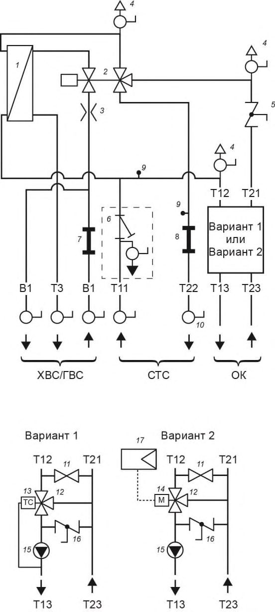
1 - пластинчатый теплообменник ГВС; 2 - трехходовой гидравлический регулятор-распределитель расхода пропорционального или термостатического действия; 3 - дроссельная шайба ГВС (необходима в случае применения регуляторараспределителя расхода пропорционального действия); 4 - воздухоотводчик (кран Маевского); 5 - зональный клапан; 6 - грязеуловитель с шаровым краном для промывки, наполнения и слива; 7 - разъем для счетчика холодной воды; 8 - разъем для счетчика тепла; 9 - муфта для погружной гильзы датчика температуры; 10 - запорный шаровой кран; 11 - перепускная линия (первичный байпас); 12 - трехходовой смеситель; 13 - термостатический привод смесителя; 14 - электрический привод смесителя, 220 В; 15 - циркуляционный насос; 16 - регулируемый байпас; 17 -контроллер
Рисунок 7.1 - Схема КТП со смесительным узлом для отопления системой теплых полов
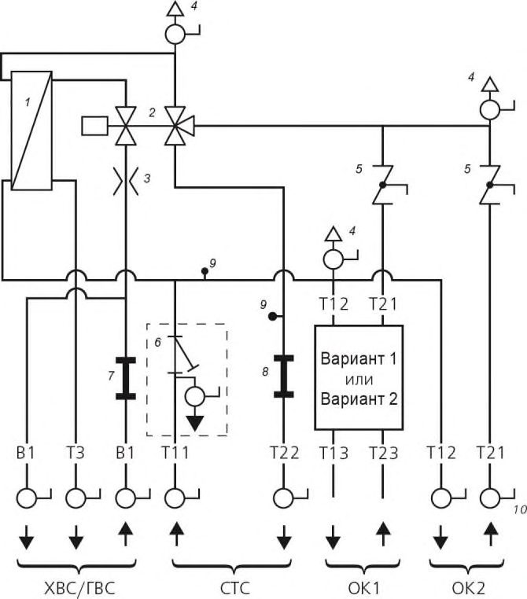
Примечание - Схемы смесительных узлов варианта 1 или варианта 2 приведены на рисунке 7.1.
1 - пластинчатый теплообменник ГВС; 2 - трехходовой гидравлический регулятор-распределитель расхода пропорционального или термостатического действия; 3 - дроссельная шайба ГВС (необходима в случае применения регуляторараспределителя расхода пропорционального действия); 4 - воздухоотводчик (кран
Маевского); 5 - зональный клапан; 6 - грязеуловитель с шаровым краном для промывки, наполнения и слива; 7 - разъем для счетчика холодной воды; 8 - разъем для счетчика тепла; 9 - муфта для погружной гильзы датчика температуры; 10 - запорный шаровой кран
Рисунок 7.2 - Схема КТП со смесительным узлом для сочетания радиаторного отопления и системы теплых полов
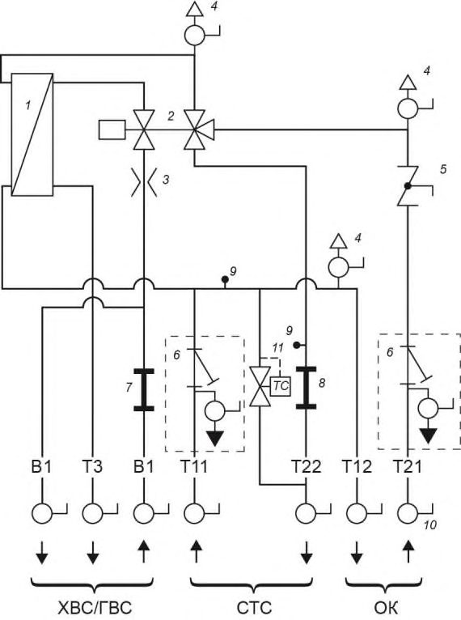
1 - пластинчатый теплообменник ГВС; 2 - трехходовой гидравлический регулятор-распределитель расхода пропорционального или термостатического действия; 3 - дроссельная шайба ГВС (необходима в случае применения регуляторараспределителя расхода пропорционального действия); 4 - воздухоотводчик (кран
Маевского); 5 - зональный клапан; 6 - грязеуловитель с шаровым краном для промывки, наполнения и слива; 7 - разъем для счетчика холодной воды; 8 - разъем для счетчика тепла; 9 - муфта для погружной гильзы датчика температуры; 10 - запорный шаровой кран; 11 - термический мост циркуляции
Рисунок 7.3 - Схема КТП, укомплектованного термическим мостом циркуляции
а) - верхний мост циркуляции б) - нижний мост циркуляции 1 - автоматический воздухоотводчик; 2 - термический мост циркуляции; 3 -сливной кран
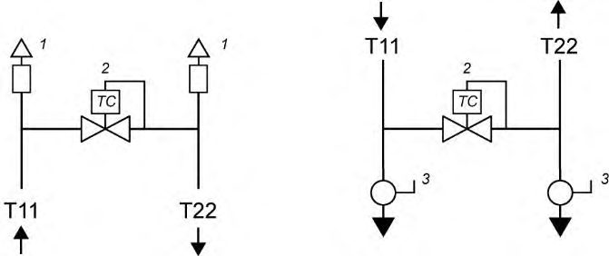
Рисунок 7.4 - Термический мост циркуляции, устанавливаемый на теплоснабжающем стояке
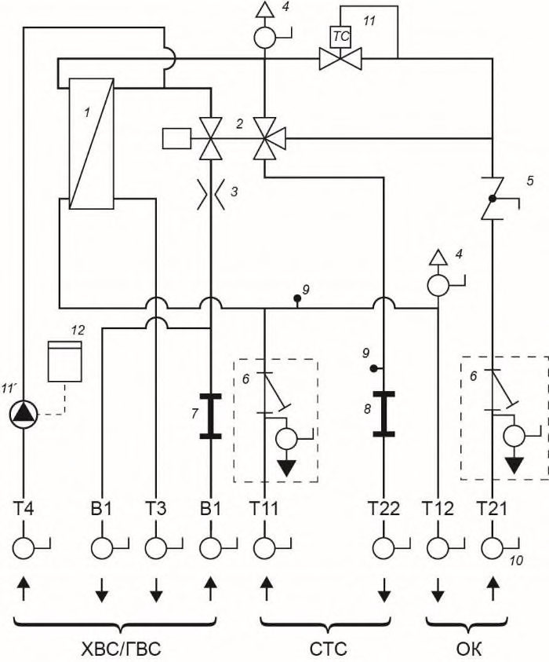
1 - пластинчатый теплообменник ГВС; 2 - трехходовой гидравлический регулятор-распределитель расхода пропорционального или термостатического действия; 3 - дроссельная шайба ГВС (необходима в случае применения регуляторараспределителя расхода пропорционального действия); 4 - воздухоотводчик (кран
Маевского); 5 - зональный клапан; 6 - грязеуловитель с шаровым краном для промывки, наполнения и слива; 7 - разъем для счетчика холодной воды; 8 - разъем для счетчика тепла; 9 - муфта для погружной гильзы датчика температуры; 10 - запорный шаровой кран; 11 - термический мост циркуляции первичного контура водонагревателя ГВС; 12 - линия циркуляции горячей воды с насосом, ~220 В; 13 - реле времени, ~220
В
Рисунок 7.5 - Схема КТП с контуром циркуляции ГВС. Регулирование посредством реле времени и термического моста циркуляции контура ГВС
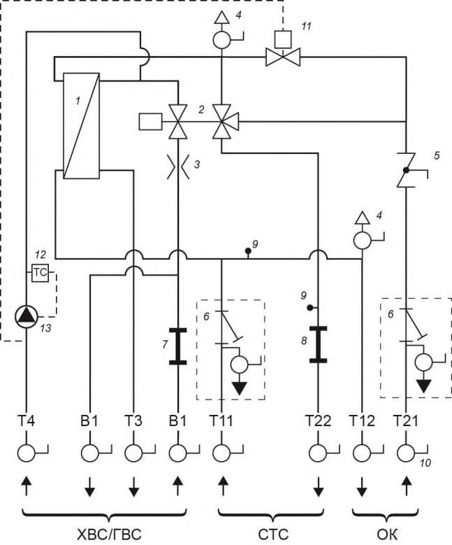
1 - пластинчатый теплообменник ГВС; 2 - трехходовой гидравлический регулятор-распределитель расхода пропорционального или термостатического действия; 3 - дроссельная шайба ГВС (необходима в случае применения регуляторараспределителя расхода пропорционального действия); 4 - воздухоотводчик (кран Маевского); 5 - зональный клапан; 6 - грязеуловитель с шаровым краном для промывки, наполнения и слива; 7 - разъем для счетчика холодной воды; 8 - разъем для счетчика тепла; 9 - муфта для погружной гильзы датчика температуры; 10 - запорный шаровой кран; 11 - соленоидный клапан, ~220 В; 12 - термостатическое реле; 13 -циркуляционный насос ГВС, ~220 В
Рисунок 7.6 - Схема КТП с контуром циркуляции ГВС. Регулирование посредством термического реле и соленоидного клапана
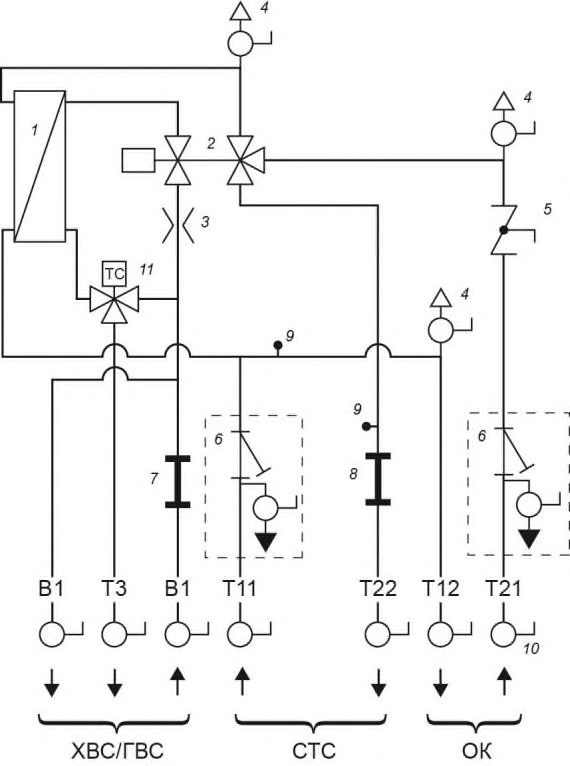
1 - пластинчатый теплообменник ГВС; 2 - трехходовой гидравлический регулятор-распределитель расхода пропорционального или термостатического действия; 3 - дроссельная шайба ГВС; 4 - воздухоотводчик (кран Маевского); 5 -зональный клапан; 6 - грязеуловитель с шаровым краном для промывки, наполнения и слива; 7 - разъем для счетчика холодной воды; 8 - разъем для счетчика тепла; 9 -муфта для погружной гильзы датчика температуры; 10 - запорный шаровой кран; 11 -термостатический смесительный вентиль для горячей воды - защита от ожога
Рисунок 7.7 - Схема КТП с термостатическим смесителем ГВС (защита от возможного ожога)
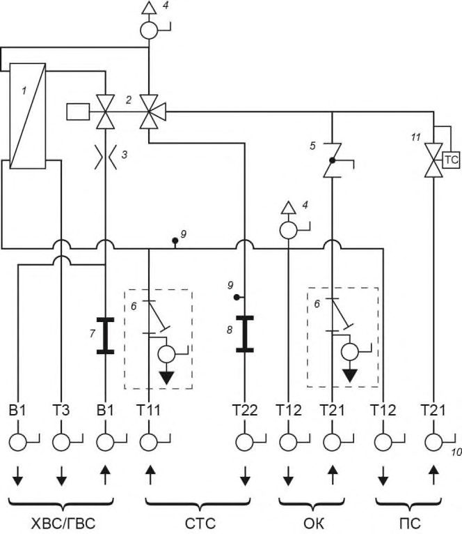
1 - пластинчатый теплообменник ГВС; 2 - трехходовой гидравлический регулятор-распределитель расхода пропорционального или термостатического действия; 3 - дроссельная шайба ГВС (необходима в случае применения регуляторараспределителя расхода пропорционального действия); 4 - воздухоотводчик (кран Маевского); 5 - зональный клапан; 6 - грязеуловитель с шаровым краном для промывки, наполнения и слива; 7 - разъем для счетчика холодной воды; 8 - разъем для счетчика тепла; 9 - муфта для погружной гильзы датчика температуры; 10 - запорный шаровой кран; 11 - ограничитель температуры обратного потока (контур полотенцесушителя)
Рисунок 7.8 - Организация контура полотенцесушителя с установкой ограничителя температуры обратного потока в модуле КТП
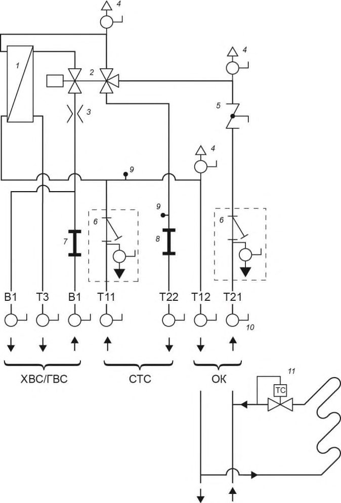
1 - пластинчатый теплообменник ГВС; 2 - трехходовой гидравлический регулятор-распределитель расхода пропорционального или термостатического действия; 3 - дроссельная шайба ГВС (необходима в случае применения регуляторараспределителя расхода пропорционального действия); 4 - воздухоотводчик (кран Маевского); 5 - зональный клапан; 6 - грязеуловитель с шаровым краном для промывки, наполнения и слива; 7 - разъем для счетчика холодной воды; 8 - разъем для счетчика тепла; 9 - муфта для погружной гильзы датчика температуры; 10 - запорный шаровой кран; 11 - ограничитель температуры обратного потока (контур полотенцесушителя)
Рисунок 7.9 - Организация контура полотенцесушителя с установкой ограничителя температуры обратного потока непосредственно на полотенцесушителе
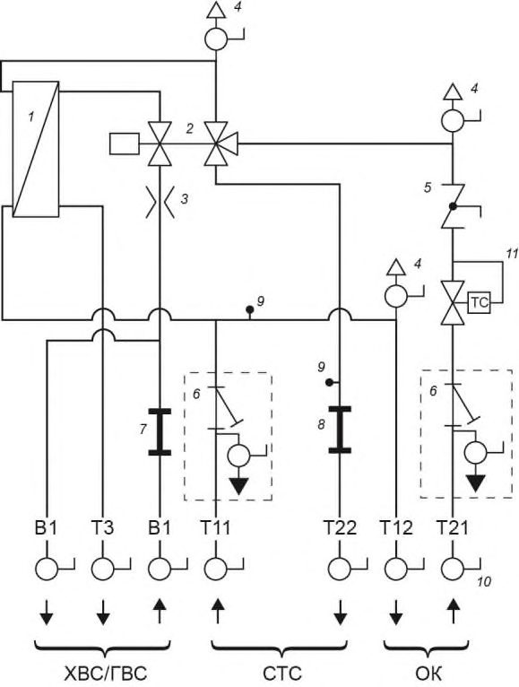
1 - пластинчатый теплообменник ГВС; 2 - трехходовой гидравлический регулятор-распределитель расхода пропорционального или термостатического действия; 3 - дроссельная шайба ГВС (необходима в случае применения регуляторараспределителя расхода пропорционального действия); 4 - воздухоотводчик (кран Маевского); 5 - зональный клапан; 6 - грязеуловитель с шаровым краном для промывки, наполнения и слива; 7 - разъем для счетчика холодной воды; 8 - разъем для счетчика тепла; 9 - муфта для погружной гильзы датчика температуры; 10 - запорный шаровой кран; 11 - вентиль
Рисунок 7.10 - Схема КТП с ограничителем температуры обратной магистрали контура отопления
1 - пластинчатый теплообменник ГВС; 2 - трехходовой гидравлический регулятор-распределитель расхода пропорционального или термостатического действия; 3 - дроссельная шайба ГВС (необходима в случае применения регуляторараспределителя расхода пропорционального действия); 4 - воздухоотводчик (кран Маевского); 5 - зональный клапан; 6 - грязеуловитель с шаровым краном для промывки, наполнения и слива; 7 - разъем для счетчика холодной воды; 8 - разъем для счетчика тепла; 9 - муфта для погружной гильзы датчика температуры; 10 - запорный шаровой кран; 11 - автоматический балансировочный клапан
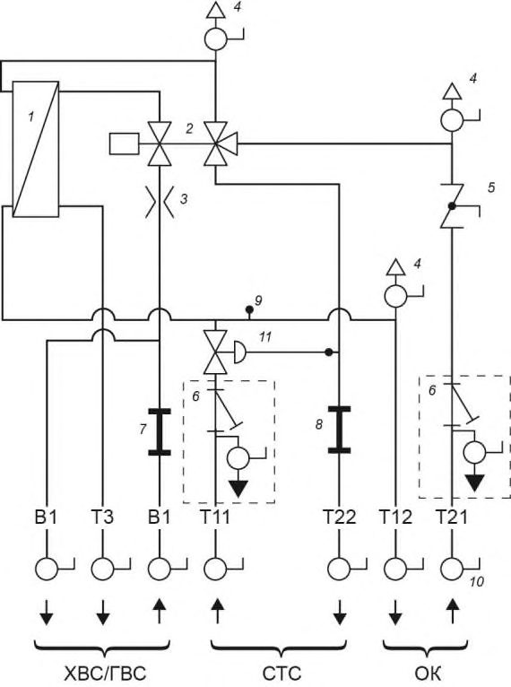
Рисунок 7.11 - Схема КТП с автоматическим балансировочным клапаном
1 - пластинчатый теплообменник ГВС; 2 - двухходовой гидравлический регулятор-распределитель расхода пропорционального или термостатического действия; 3 - дроссельная шайба ГВС (необходима в случае применения регуляторараспределителя расхода пропорционального действия); 4 - воздухоотводчик (кран Маевского); 5 - зональный клапан; 6 - грязеуловитель с шаровым краном для промывки, наполнения и слива; 7 - разъем для счетчика холодной воды; 8 - разъем для счетчика тепла; 9 - муфта для погружной гильзы датчика температуры; 10 - запорный шаровой кран
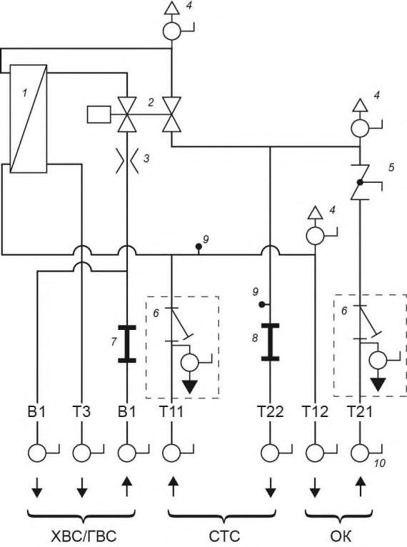
Рисунок 7.12 - Гидравлическая схема КТП с условной гидравлической связью режима работы водонагревателя ГВС и системы отопления
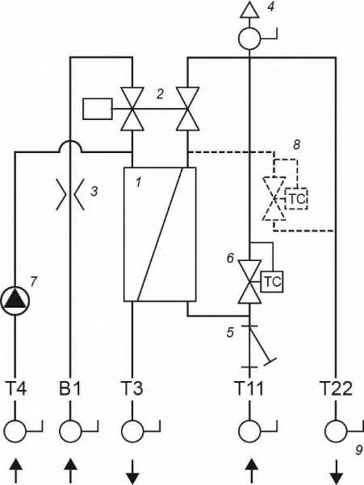
1 - пластинчатый теплообменник ГВС; 2 - двухходовой гидравлический регулятор-распределитель расхода пропорционального или термостатического действия; 3 - дроссельная шайба ГВС (необходима в случае применения регуляторараспределителя расхода пропорционального действия); 4 - ручной воздухоотводчик; 5 - грязеуловитель; 6 - термический мост циркуляции (при установке элементов 7 , 8 -не устанавливается); 7 - контур циркуляции ГВС; 8 - термический мост циркуляции контура первичного контура ГВС; 9 - запорный шаровой кран
Рисунок 7.13 - Гидравлическая схема КТП для обеспечения локального ГВС
1 - пластинчатый теплообменник ГВС; 2 - контроллер управления; 3 - датчик протока; 4 - циркуляционный насос подачи теплоносителя; 5 6 - ручной воздухоотводчик; 7 - насос циркуляции ГВС
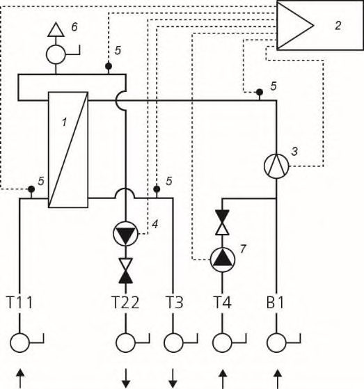
Рисунок 7.14
- датчики температуры; - Гидравлическая схема станции обеспечения ГВС
8Ввод в эксплуатацию, приемка и сервисное обслуживание квартирных тепловых пунктов
Библиография
- [1] Федеральный закон от 30 декабря 2009 г. № 384-ФЗ «Технический регламент о безопасности зданий и сооружений»
- [2] Федеральный закон от 23 ноября 2009 г. № 261-ФЗ «Об энергосбережении и о повышении энергетической эффективности и о внесении изменений в отдельные законодательные акты Российской Федерации»
- [3] Федеральный закон от 22 июля 2008 г. № 123-ФЗ «Технический регламент о требованиях пожарной безопасности»
- [4] СП 41-101-95 Проектирование тепловых пунктов